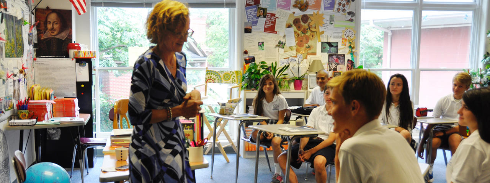

About
Admission
Academics
Programs
Athletics
Parents
Alumni
Giving
News
Academics
Montessori Program
Lower School
Middle School
Upper School
College Counseling
Summit Summer
Global Citizenry
Libraries
Technology
Leibold Pond

Montessori Program: Fast Facts
Only independent school in area offering full Montessori preschool experience.
One of a few schools in Greater Cincinnati applying the Montessori philosophy in an educational program beginning at 18 months old. A variety of sessions are available. Multiple options for 3- to 6-year-olds to include half-day and full-day academic and enrichment programs in private school setting.
Phonics instruction begins at age 2 accelerating each child's literacy development. The 13-year World Language Program begins in Kindergarten and continues through grade 12. Toddler (18- to 36-month-old) students are introduced to Spanish with the addition of French in pre-Kindergarten.
Orff Schulwerk early childhood music education approach helps develop areas of the brain involved in language, reasoning and problem-solving. The Signature Enrichment Program includes Cultural Studies, Geography, Science, and Art; research shows children exposed to these areas accelerates curiosity and love of learning.
Summer programs and before and after-school programs continue child development. The Montessori educational program includes a dedicated Montessori literacy specialist. Public speaking, theatrical performances and small group collaboration projects develop communication and social skills critical to long-term academic success. Kindergartners are reading and writing short stories prior to first grade which leads to an accelerated start in lower grades.
Private piano and violin lessons for Kindergartners taught by professional musicians. The Summit's celebrated Character Education Program develops self-discipline, empathy, respect for others, honesty, resilience and confidence in each child.
The Summit at a Glance
Character trait focus by grade – Montessori through grade 12.
Formation of Faith and Formation of Conscience program by grade.
Manners and social skills emphasis by grade.
Thirteen-year World Language Program, Montessori through grade 12 The Summit online Portal helps parents monitor their child's performance and daily activities.